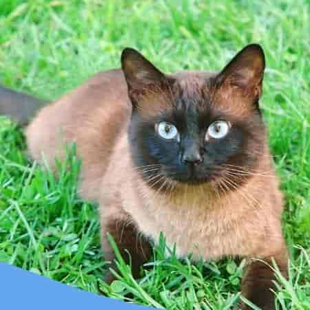

Click a country's name to view it's regional breeds.
Myanmar: Burmese Cat
Burmese cats are known for their affectionate, people-oriented nature and silky, short
coats. Originating in Myanmar, they are muscular yet elegant, often forming strong bonds
with their human companions.

Vietnam: Domestic Shorthair
Vietnam does not have a recognized regional cat breed, but domestic shorthairs are widely
kept as pets throughout the country. These cats are typically mixed-breed, short-coated,
and well-adapted to Vietnam's climate and lifestyle, serving as both companions and
natural pest controllers.
Laos: Siamese
Siamese cats are the most common breed found in Laos, admired for their sleek bodies and
striking blue almond-shaped eyes. Although they originate from Thailand, their presence
is widespread throughout Southeast Asia, including Laos. Known for their vocal and
social personalities, Siamese cats make affectionate and engaging companions in many
Laotian households.

Thailand: Korat
The Korat is a rare and ancient cat breed from Thailand, easily recognized by its
shimmering silver-blue coat and large, luminous green eyes. Traditionally regarded as a
symbol of good luck and prosperity, Korats are affectionate, intelligent, and form
strong bonds with their owners.
Philippines: Persian
Persian cats are a common and popular breed found in the Philippines, admired for their
long, luxurious coats and calm, gentle personalities. The Philippines does not have a
recognized regional cat breed, so many households keep imported breeds like Persians as
pets. Despite the tropical climate, Filipino cat owners cherish Persians for their
affectionate nature and striking appearance.
Cambodia: Domestic Shorthair
Cambodia does not have any recognized regional cat breeds, with domestic shorthairs being
the most common type of cat found throughout the country. These mixed-breed cats are
adaptable, resilient, and valued as both companions and natural pest controllers in
Cambodian households.
Malaysia: British Shorthair
Malaysia does not have a recognized regional cat breed, but British Shorthairs are a
popular imported breed there. Known for their calm demeanor and dense, plush coats,
British Shorthairs are cherished by many Malaysian cat owners despite the tropical
climate.
Brunei: Bornean Bay
The Bornean Bay Cat is a rare and elusive wild cat native to the forests of Borneo,
including Brunei. It is a small, reddish-brown feline species that is poorly understood
due to its secretive nature and limited sightings in the wild.
Singapore: Singapura
The Singapura cat is a small, muscular breed originating from Singapore, known for its
large eyes and ears and a distinctive sepia-toned coat. It is one of the smallest
domesticated cat breeds and is prized for its playful and affectionate personality.
Indonesia: Balinese
The Balinese cat is a long-haired variety of the Siamese breed, known for its silky coat,
striking blue eyes, and elegant build. Although it takes its name from the Indonesian
island of Bali, the breed was actually developed in the United States and is admired for
its playful, vocal, and affectionate nature.
East Timor: Domestic Shorthair
Domestic Shorthair cats are the most common type of cats found in East Timor, known for
their diverse colors and adaptable nature. These mixed-breed cats thrive in the tropical
climate, serving as both beloved pets and effective hunters of household pests.